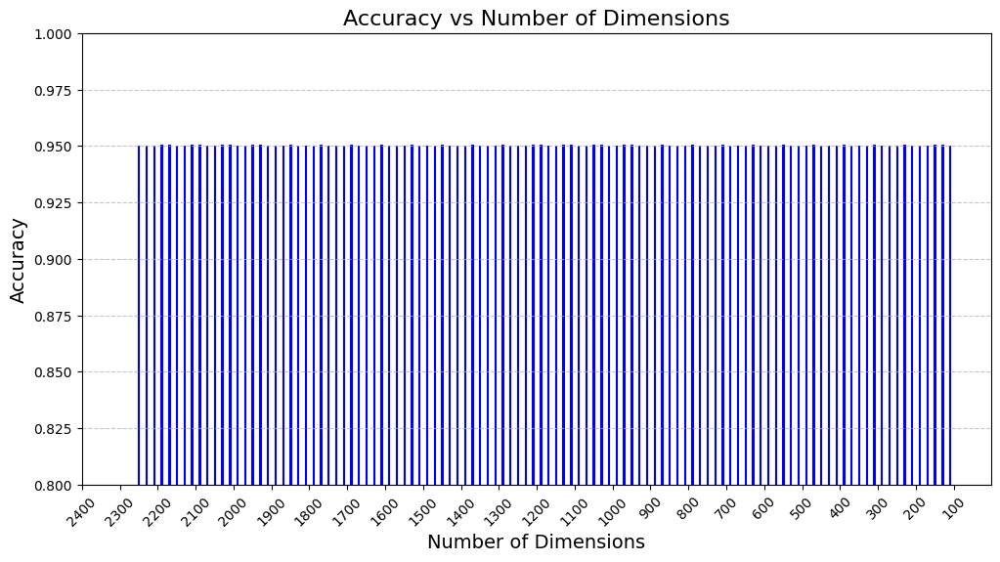

Klasifikasi Dengan Pengurangan Dimensi Secara Bertahap#
Installasi Library#
!pip install Sastrawi pandas
Collecting Sastrawi
Downloading Sastrawi-1.0.1-py2.py3-none-any.whl.metadata (909 bytes)
Requirement already satisfied: pandas in /usr/local/lib/python3.10/dist-packages (2.2.2)
Requirement already satisfied: numpy>=1.22.4 in /usr/local/lib/python3.10/dist-packages (from pandas) (1.26.4)
Requirement already satisfied: python-dateutil>=2.8.2 in /usr/local/lib/python3.10/dist-packages (from pandas) (2.8.2)
Requirement already satisfied: pytz>=2020.1 in /usr/local/lib/python3.10/dist-packages (from pandas) (2024.2)
Requirement already satisfied: tzdata>=2022.7 in /usr/local/lib/python3.10/dist-packages (from pandas) (2024.2)
Requirement already satisfied: six>=1.5 in /usr/local/lib/python3.10/dist-packages (from python-dateutil>=2.8.2->pandas) (1.16.0)
Downloading Sastrawi-1.0.1-py2.py3-none-any.whl (209 kB)
━━━━━━━━━━━━━━━━━━━━━━━━━━━━━━━━━━━━━━━━ 209.7/209.7 kB 3.5 MB/s eta 0:00:00
?25hInstalling collected packages: Sastrawi
Successfully installed Sastrawi-1.0.1
import pandas as pd
import re
import pickle
import nltk
import numpy as np
nltk.download('stopwords')
nltk.download('wordnet')
nltk.download('punkt')
from tqdm import tqdm
from nltk.corpus import stopwords
from Sastrawi.Stemmer.StemmerFactory import StemmerFactory
from sklearn.decomposition import TruncatedSVD
from sklearn import preprocessing
from sklearn.feature_extraction.text import CountVectorizer
from sklearn.feature_extraction.text import TfidfVectorizer
from sklearn.metrics.pairwise import cosine_similarity
from sklearn.model_selection import train_test_split
[nltk_data] Downloading package stopwords to /root/nltk_data...
[nltk_data] Unzipping corpora/stopwords.zip.
[nltk_data] Downloading package wordnet to /root/nltk_data...
[nltk_data] Downloading package punkt to /root/nltk_data...
[nltk_data] Unzipping tokenizers/punkt.zip.
Load Data#
file_path = '/content/hasil_crawling.csv'
data = pd.read_csv(file_path)
data
| Title | Date | Content | Category | |
|---|---|---|---|---|
| 0 | PalmCo Dukung Cyber Education di Sekolah Remot... | Ade Hapsari Lestarini • 11 September 2024 08:59 | Jakarta: Sub Holding Perkebunan Nusantara PTPN... | Ekonomi |
| 1 | Harga Jual Emas Antam Melesat Rp13 Ribu/Gram | Arif Wicaksono • 11 September 2024 08:55 | Jakarta: Harga emas batangan PT Aneka Tambang ... | Ekonomi |
| 2 | Terpopuler Ekonomi: Pascamerger Angkasa Pura h... | Ade Hapsari Lestarini • 11 September 2024 08:28 | Jakarta: Berita-berita terpopuler ekonomi pada... | Ekonomi |
| 3 | Inflasi dan Debat Presiden AS Bikin Harga Emas... | Ade Hapsari Lestarini • 11 September 2024 08:12 | Jakarta: Harga emas dunia menguat pada sesi pe... | Ekonomi |
| 4 | Harga Minyak Mentah Brent Terpental ke USD69,1... | Ade Hapsari Lestarini • 11 September 2024 07:57 | New York: Harga minyak mentah dunia terpantau ... | Ekonomi |
| ... | ... | ... | ... | ... |
| 95 | Indonesia Ditunjuk jadi Tuan Rumah World Abili... | Gregorius Gelino • 6 September 2024 12:07 | Paris: Menteri Pemuda dan Olahraga Republik In... | Olahraga |
| 96 | Menpora Berharap Banyak dengan PON XXI Aceh-Sumut | Gregorius Gelino • 6 September 2024 11:19 | Jakarta: Menteri Pemuda dan Olahraga Republik ... | Olahraga |
| 97 | IFG Labuan Bajo Marathon 2024 Siapkan Hadiah R... | Gregorius Gelino • 6 September 2024 10:25 | Labuan Bajo: Pendaftaran IFG Labuan Bajo Marat... | Olahraga |
| 98 | Hasil Pertandingan UEFA Nations League | Alfa Mandalika • 6 September 2024 09:22 | Jakarta: Sejumlah negara melakoni laga UEFA Na... | Olahraga |
| 99 | Ketum Perbasi Danny Kosasih Tutup Usia | Kautsar Halim • 6 September 2024 04:24 | Jakarta: Dunia bola basket Tanah Air tengah be... | Olahraga |
100 rows × 4 columns
df_acak = data.sample(frac=1).reset_index(drop=True)
df_acak
| Title | Date | Content | Category | |
|---|---|---|---|---|
| 0 | Jonatan Christie Senang Kembali Mentas | Gregorius Gelino • 8 September 2024 20:29 | Jakarta: Pebulu tangkis tunggal putra Jonatan ... | Olahraga |
| 1 | Perusahaan Pembangkit Listrik Italia Hengkang ... | Arif Wicaksono • 10 September 2024 22:09 | Hanoi: Perusahaan pembangkit listrik asal Ital... | Ekonomi |
| 2 | Tim Panjat Tebing Putri Jatim Sabet Emas Nomor... | Gregorius Gelino • 9 September 2024 13:21 | Banda Aceh: Tim panjat tebing Jawa Timur, Eka... | Olahraga |
| 3 | Erick Thohir Rombak Direksi Bulog, Tunjuk Wahy... | Annisa Ayu Artanti • 10 September 2024 09:00 | Ekonomi | |
| 4 | YCAB Foundation-Juara Capital Indonesia Luncur... | 10 September 2024 16:40 | Jakarta: YCAB Foundation bersama Juara Capital... | Ekonomi |
| ... | ... | ... | ... | ... |
| 95 | Pangkas Birokrasi Pascamerger AP I dan AP 2, J... | Insi Nantika Jelita • 10 September 2024 08:57 | Ekonomi | |
| 96 | Perdagangan Emas di Bursa Komoditi Bakal Jadi ... | Ade Hapsari Lestarini • 10 September 2024 10:36 | Jakarta: Perdagangan emas di bursa komoditi di... | Ekonomi |
| 97 | Kirab Api PON XXI Aceh Tiba di Banda Aceh | Fajri Fatmawati • 7 September 2024 13:52 | Banda Aceh: Kirab Api Pekan Olahraga Nasional ... | Olahraga |
| 98 | Deschamps Kesal Pemain Prancis Lengah Lawan It... | Gregorius Gelino • 8 September 2024 10:20 | Paris: Prancis menelan kekalahan pada laga per... | Olahraga |
| 99 | Warga Antusias Saksikan Kirab Obor PON XXI Ace... | Gregorius Gelino • 7 September 2024 15:02 | Banda Aceh: Ribuan warga dan pelajar di Kabupa... | Olahraga |
100 rows × 4 columns
titles = data['Title']
contents = data['Content']
data['Content'] = titles + " " + contents
Splitting Data#
X = data['Content']
y = data['Category']
X_train, X_test, y_train, y_test = train_test_split(X, y, test_size=0.2, random_state=42)
Preprocessing#
def clean_lower(text):
if isinstance(text, str):
return text.lower()
return text
def clean_punct(text):
if isinstance(text, str):
clean_patterns = re.compile(r'[0-9]|[/(){}\[\]\|@,;_]|[^a-z ]')
text = clean_patterns.sub(' ', text)
text = re.sub(r'\s+', ' ', text).strip()
return text
return text
def _normalize_whitespace(text):
if isinstance(text, str):
corrected = re.sub(r'\s+', ' ', text)
return corrected.strip()
return text
def clean_stopwords(text):
if isinstance(text, str):
stopword = set(stopwords.words('indonesian'))
text = ' '.join(word for word in text.split() if word not in stopword)
return text.strip()
return text
def sastrawistemmer(text):
factory = StemmerFactory()
st = factory.create_stemmer()
text = ' '.join(st.stem(word) for word in text.split())
return text
X_train = X_train.apply(clean_lower)
X_train = X_train.apply(clean_punct)
X_train = X_train.apply(_normalize_whitespace)
X_train = X_train.apply(clean_stopwords)
X_train = X_train.apply(sastrawistemmer)
X_test = X_test.apply(clean_lower)
X_test = X_test.apply(clean_punct)
X_test = X_test.apply(_normalize_whitespace)
X_test = X_test.apply(clean_stopwords)
X_test = X_test.apply(sastrawistemmer)
train_df = pd.DataFrame({'stemmed': X_train, 'Category': y_train})
test_df = pd.DataFrame({'stemmed': X_test, 'Category': y_test})
train_df
| stemmed | Category | |
|---|---|---|
| 55 | tim panjat tebing putri jatim sabet emas nomor... | Olahraga |
| 88 | intip penalti gagal maarten paes baru lawan ar... | Olahraga |
| 26 | ekonomi as soft landing chicago ekonomi amerik... | Ekonomi |
| 42 | semen hijau ancam ubah iklim dunia jakarta pt ... | Ekonomi |
| 69 | pon xxi aceh sumut muncul bakat panjat tebing ... | Olahraga |
| ... | ... | ... |
| 60 | kolaborasi lancar bikin menpora pon xxi aceh s... | Olahraga |
| 71 | hummels kes sosok de rossi roma bek as roma ma... | Olahraga |
| 14 | tan copot direktur gegara main calo barang jasa | Ekonomi |
| 92 | abraham wenas labuh kesatria bengawan solo sol... | Olahraga |
| 51 | venue arung jeram pon xxi aceh sumut potensi d... | Olahraga |
80 rows × 2 columns
test_df
| stemmed | Category | |
|---|---|---|
| 83 | warga aceh antusias saksi tanding basket pon x... | Olahraga |
| 53 | shin tae yong hadir sesi latih timnas indonesi... | Olahraga |
| 70 | menko pmk pasti presiden hadir buk pon xxi ace... | Olahraga |
| 45 | harga emas antam hasil tipis jakarta harga ema... | Ekonomi |
| 44 | erick thohir rombak direksi bulog wahyu supary... | Ekonomi |
| 39 | dagang emas bursa komoditi pilih masyarakat ja... | Ekonomi |
| 22 | bahlil timbang lanjut operasi pltu | Ekonomi |
| 80 | timnas indonesia sponsor jakarta extrajoss min... | Olahraga |
| 10 | anggota holding pupuk indonesia dorong ekosist... | Ekonomi |
| 0 | palmco dukung cyber education sekolah remote a... | Ekonomi |
| 18 | bisnis vila janji smart luxury villa at damara... | Ekonomi |
| 30 | milik sumber daya ebt indonesia yakin main uta... | Ekonomi |
| 73 | deschamps kesal main prancis lengah lawan ital... | Olahraga |
| 33 | klaster usaha telur asin abinisa omzet tingkat... | Ekonomi |
| 90 | sosok ten hag bikin de ligt gabung mu manchest... | Olahraga |
| 4 | harga minyak mentah brent pental usd barel new... | Ekonomi |
| 76 | erick thohir pasti rumput gbk aman jelang hada... | Olahraga |
| 77 | hotel apung penuh akomodasi masyarakat pon xxi... | Olahraga |
| 12 | skk migas bp catat rekor produksi gas nasional | Ekonomi |
| 31 | anugerah svarna bhumi award tani tantang maju ... | Ekonomi |
Pembuatan VSM#
tfidf_vectorizer = TfidfVectorizer()
X_train_tfidf = tfidf_vectorizer.fit_transform(X_train)
X_test_tfidf = tfidf_vectorizer.transform(X_test)
tfidf_df = pd.DataFrame(X_train_tfidf.toarray(), columns=tfidf_vectorizer.get_feature_names_out())
tfidf_df
| abadi | abbeele | abdullah | abilitysport | abilitysprot | abraham | absen | acara | aceh | ada | ... | york | yose | youth | yunani | yusrizal | za | zeki | zian | zona | zuri | |
|---|---|---|---|---|---|---|---|---|---|---|---|---|---|---|---|---|---|---|---|---|---|
| 0 | 0.0 | 0.0 | 0.0 | 0.0 | 0.0 | 0.000000 | 0.0 | 0.00000 | 0.176186 | 0.000000 | ... | 0.0 | 0.0 | 0.0 | 0.0 | 0.000000 | 0.000000 | 0.0 | 0.0 | 0.000000 | 0.0 |
| 1 | 0.0 | 0.0 | 0.0 | 0.0 | 0.0 | 0.000000 | 0.0 | 0.00000 | 0.000000 | 0.000000 | ... | 0.0 | 0.0 | 0.0 | 0.0 | 0.000000 | 0.000000 | 0.0 | 0.0 | 0.059791 | 0.0 |
| 2 | 0.0 | 0.0 | 0.0 | 0.0 | 0.0 | 0.000000 | 0.0 | 0.00000 | 0.000000 | 0.000000 | ... | 0.0 | 0.0 | 0.0 | 0.0 | 0.000000 | 0.000000 | 0.0 | 0.0 | 0.000000 | 0.0 |
| 3 | 0.0 | 0.0 | 0.0 | 0.0 | 0.0 | 0.000000 | 0.0 | 0.00000 | 0.000000 | 0.000000 | ... | 0.0 | 0.0 | 0.0 | 0.0 | 0.000000 | 0.000000 | 0.0 | 0.0 | 0.000000 | 0.0 |
| 4 | 0.0 | 0.0 | 0.0 | 0.0 | 0.0 | 0.000000 | 0.0 | 0.00000 | 0.388843 | 0.045726 | ... | 0.0 | 0.0 | 0.0 | 0.0 | 0.000000 | 0.053634 | 0.0 | 0.0 | 0.000000 | 0.0 |
| ... | ... | ... | ... | ... | ... | ... | ... | ... | ... | ... | ... | ... | ... | ... | ... | ... | ... | ... | ... | ... | ... |
| 75 | 0.0 | 0.0 | 0.0 | 0.0 | 0.0 | 0.000000 | 0.0 | 0.05601 | 0.293105 | 0.000000 | ... | 0.0 | 0.0 | 0.0 | 0.0 | 0.000000 | 0.000000 | 0.0 | 0.0 | 0.000000 | 0.0 |
| 76 | 0.0 | 0.0 | 0.0 | 0.0 | 0.0 | 0.000000 | 0.0 | 0.00000 | 0.000000 | 0.000000 | ... | 0.0 | 0.0 | 0.0 | 0.0 | 0.000000 | 0.000000 | 0.0 | 0.0 | 0.000000 | 0.0 |
| 77 | 0.0 | 0.0 | 0.0 | 0.0 | 0.0 | 0.000000 | 0.0 | 0.00000 | 0.000000 | 0.000000 | ... | 0.0 | 0.0 | 0.0 | 0.0 | 0.000000 | 0.000000 | 0.0 | 0.0 | 0.000000 | 0.0 |
| 78 | 0.0 | 0.0 | 0.0 | 0.0 | 0.0 | 0.528422 | 0.0 | 0.00000 | 0.000000 | 0.000000 | ... | 0.0 | 0.0 | 0.0 | 0.0 | 0.000000 | 0.000000 | 0.0 | 0.0 | 0.000000 | 0.0 |
| 79 | 0.0 | 0.0 | 0.0 | 0.0 | 0.0 | 0.000000 | 0.0 | 0.00000 | 0.228088 | 0.000000 | ... | 0.0 | 0.0 | 0.0 | 0.0 | 0.058427 | 0.000000 | 0.0 | 0.0 | 0.000000 | 0.0 |
80 rows × 2249 columns
tfidf_df = pd.DataFrame(X_test_tfidf.toarray(), columns=tfidf_vectorizer.get_feature_names_out())
tfidf_df
| abadi | abbeele | abdullah | abilitysport | abilitysprot | abraham | absen | acara | aceh | ada | ... | york | yose | youth | yunani | yusrizal | za | zeki | zian | zona | zuri | |
|---|---|---|---|---|---|---|---|---|---|---|---|---|---|---|---|---|---|---|---|---|---|
| 0 | 0.0 | 0.0 | 0.0 | 0.0 | 0.0 | 0.0 | 0.0 | 0.000000 | 0.376001 | 0.000000 | ... | 0.000000 | 0.0 | 0.0 | 0.0 | 0.0 | 0.000000 | 0.0 | 0.0 | 0.000000 | 0.0 |
| 1 | 0.0 | 0.0 | 0.0 | 0.0 | 0.0 | 0.0 | 0.0 | 0.000000 | 0.000000 | 0.000000 | ... | 0.000000 | 0.0 | 0.0 | 0.0 | 0.0 | 0.000000 | 0.0 | 0.0 | 0.000000 | 0.0 |
| 2 | 0.0 | 0.0 | 0.0 | 0.0 | 0.0 | 0.0 | 0.0 | 0.142301 | 0.372335 | 0.000000 | ... | 0.000000 | 0.0 | 0.0 | 0.0 | 0.0 | 0.000000 | 0.0 | 0.0 | 0.000000 | 0.0 |
| 3 | 0.0 | 0.0 | 0.0 | 0.0 | 0.0 | 0.0 | 0.0 | 0.000000 | 0.000000 | 0.000000 | ... | 0.000000 | 0.0 | 0.0 | 0.0 | 0.0 | 0.000000 | 0.0 | 0.0 | 0.000000 | 0.0 |
| 4 | 0.0 | 0.0 | 0.0 | 0.0 | 0.0 | 0.0 | 0.0 | 0.000000 | 0.000000 | 0.000000 | ... | 0.000000 | 0.0 | 0.0 | 0.0 | 0.0 | 0.000000 | 0.0 | 0.0 | 0.000000 | 0.0 |
| 5 | 0.0 | 0.0 | 0.0 | 0.0 | 0.0 | 0.0 | 0.0 | 0.000000 | 0.000000 | 0.000000 | ... | 0.000000 | 0.0 | 0.0 | 0.0 | 0.0 | 0.000000 | 0.0 | 0.0 | 0.000000 | 0.0 |
| 6 | 0.0 | 0.0 | 0.0 | 0.0 | 0.0 | 0.0 | 0.0 | 0.000000 | 0.000000 | 0.000000 | ... | 0.000000 | 0.0 | 0.0 | 0.0 | 0.0 | 0.000000 | 0.0 | 0.0 | 0.000000 | 0.0 |
| 7 | 0.0 | 0.0 | 0.0 | 0.0 | 0.0 | 0.0 | 0.0 | 0.000000 | 0.000000 | 0.029647 | ... | 0.000000 | 0.0 | 0.0 | 0.0 | 0.0 | 0.000000 | 0.0 | 0.0 | 0.026648 | 0.0 |
| 8 | 0.0 | 0.0 | 0.0 | 0.0 | 0.0 | 0.0 | 0.0 | 0.000000 | 0.000000 | 0.000000 | ... | 0.000000 | 0.0 | 0.0 | 0.0 | 0.0 | 0.000000 | 0.0 | 0.0 | 0.000000 | 0.0 |
| 9 | 0.0 | 0.0 | 0.0 | 0.0 | 0.0 | 0.0 | 0.0 | 0.000000 | 0.000000 | 0.000000 | ... | 0.000000 | 0.0 | 0.0 | 0.0 | 0.0 | 0.000000 | 0.0 | 0.0 | 0.000000 | 0.0 |
| 10 | 0.0 | 0.0 | 0.0 | 0.0 | 0.0 | 0.0 | 0.0 | 0.000000 | 0.000000 | 0.000000 | ... | 0.000000 | 0.0 | 0.0 | 0.0 | 0.0 | 0.000000 | 0.0 | 0.0 | 0.000000 | 0.0 |
| 11 | 0.0 | 0.0 | 0.0 | 0.0 | 0.0 | 0.0 | 0.0 | 0.058084 | 0.000000 | 0.000000 | ... | 0.000000 | 0.0 | 0.0 | 0.0 | 0.0 | 0.000000 | 0.0 | 0.0 | 0.000000 | 0.0 |
| 12 | 0.0 | 0.0 | 0.0 | 0.0 | 0.0 | 0.0 | 0.0 | 0.000000 | 0.000000 | 0.000000 | ... | 0.000000 | 0.0 | 0.0 | 0.0 | 0.0 | 0.000000 | 0.0 | 0.0 | 0.000000 | 0.0 |
| 13 | 0.0 | 0.0 | 0.0 | 0.0 | 0.0 | 0.0 | 0.0 | 0.000000 | 0.000000 | 0.000000 | ... | 0.000000 | 0.0 | 0.0 | 0.0 | 0.0 | 0.000000 | 0.0 | 0.0 | 0.000000 | 0.0 |
| 14 | 0.0 | 0.0 | 0.0 | 0.0 | 0.0 | 0.0 | 0.0 | 0.000000 | 0.000000 | 0.092021 | ... | 0.000000 | 0.0 | 0.0 | 0.0 | 0.0 | 0.000000 | 0.0 | 0.0 | 0.000000 | 0.0 |
| 15 | 0.0 | 0.0 | 0.0 | 0.0 | 0.0 | 0.0 | 0.0 | 0.000000 | 0.000000 | 0.000000 | ... | 0.178839 | 0.0 | 0.0 | 0.0 | 0.0 | 0.000000 | 0.0 | 0.0 | 0.000000 | 0.0 |
| 16 | 0.0 | 0.0 | 0.0 | 0.0 | 0.0 | 0.0 | 0.0 | 0.000000 | 0.000000 | 0.000000 | ... | 0.000000 | 0.0 | 0.0 | 0.0 | 0.0 | 0.000000 | 0.0 | 0.0 | 0.000000 | 0.0 |
| 17 | 0.0 | 0.0 | 0.0 | 0.0 | 0.0 | 0.0 | 0.0 | 0.000000 | 0.276478 | 0.000000 | ... | 0.000000 | 0.0 | 0.0 | 0.0 | 0.0 | 0.070822 | 0.0 | 0.0 | 0.000000 | 0.0 |
| 18 | 0.0 | 0.0 | 0.0 | 0.0 | 0.0 | 0.0 | 0.0 | 0.000000 | 0.000000 | 0.000000 | ... | 0.000000 | 0.0 | 0.0 | 0.0 | 0.0 | 0.000000 | 0.0 | 0.0 | 0.000000 | 0.0 |
| 19 | 0.0 | 0.0 | 0.0 | 0.0 | 0.0 | 0.0 | 0.0 | 0.088154 | 0.000000 | 0.000000 | ... | 0.000000 | 0.0 | 0.0 | 0.0 | 0.0 | 0.000000 | 0.0 | 0.0 | 0.000000 | 0.0 |
20 rows × 2249 columns
label_encoder = preprocessing.LabelEncoder()
y_train_encoded = label_encoder.fit_transform(y_train)
y_test_encoded = label_encoder.transform(y_test)
accuracy_results = []
current_dim = X_train_tfidf.shape[1]
from sklearn import preprocessing
from sklearn.linear_model import LogisticRegression
from sklearn.metrics import accuracy_score
Penerapan SVD secara bertahap#
mengurangi dimensi secara bertahap dengan dikurangi sebanyak 20 sampai dengan dimensi mendekati 100 dan dilakukan klasifikasi untuk mengetahui akurasi dari tiap pengurangan dimensi yang dilakukan
# Looping untuk mengurangi jumlah dimensi sebanyak 20 pada setiap iterasi
while current_dim >= 100:
print(f"Reducing dimensions to {current_dim}")
# Inisialisasi dan fit SVD
svd = TruncatedSVD(n_components=current_dim, random_state=42)
# Lakukan reduksi dimensi pada data training dan testing
X_train_lsa = svd.fit_transform(X_train_tfidf)
X_test_lsa = svd.transform(X_test_tfidf)
# Melatih model Logistic Regression pada data yang telah direduksi
lr_model = LogisticRegression()
lr_model.fit(X_train_lsa, y_train_encoded)
# Prediksi pada data testing
y_pred = lr_model.predict(X_test_lsa)
# Menghitung akurasi dan menambahkannya ke dalam list
accuracy = accuracy_score(y_test_encoded, y_pred)
accuracy_results.append({"Dimensions": current_dim, "Accuracy": accuracy})
# Menampilkan accuracy untuk setiap current_dim
print(f"Accuracy with {current_dim} components: {accuracy}")
# Kurangi jumlah dimensi sebanyak 20 untuk iterasi berikutnya
current_dim -= 20
Reducing dimensions to 2249
Accuracy with 2249 components: 0.95
Reducing dimensions to 2229
Accuracy with 2229 components: 0.95
Reducing dimensions to 2209
Accuracy with 2209 components: 0.95
Reducing dimensions to 2189
Accuracy with 2189 components: 0.95
Reducing dimensions to 2169
Accuracy with 2169 components: 0.95
Reducing dimensions to 2149
Accuracy with 2149 components: 0.95
Reducing dimensions to 2129
Accuracy with 2129 components: 0.95
Reducing dimensions to 2109
Accuracy with 2109 components: 0.95
Reducing dimensions to 2089
Accuracy with 2089 components: 0.95
Reducing dimensions to 2069
Accuracy with 2069 components: 0.95
Reducing dimensions to 2049
Accuracy with 2049 components: 0.95
Reducing dimensions to 2029
Accuracy with 2029 components: 0.95
Reducing dimensions to 2009
Accuracy with 2009 components: 0.95
Reducing dimensions to 1989
Accuracy with 1989 components: 0.95
Reducing dimensions to 1969
Accuracy with 1969 components: 0.95
Reducing dimensions to 1949
Accuracy with 1949 components: 0.95
Reducing dimensions to 1929
Accuracy with 1929 components: 0.95
Reducing dimensions to 1909
Accuracy with 1909 components: 0.95
Reducing dimensions to 1889
Accuracy with 1889 components: 0.95
Reducing dimensions to 1869
Accuracy with 1869 components: 0.95
Reducing dimensions to 1849
Accuracy with 1849 components: 0.95
Reducing dimensions to 1829
Accuracy with 1829 components: 0.95
Reducing dimensions to 1809
Accuracy with 1809 components: 0.95
Reducing dimensions to 1789
Accuracy with 1789 components: 0.95
Reducing dimensions to 1769
Accuracy with 1769 components: 0.95
Reducing dimensions to 1749
Accuracy with 1749 components: 0.95
Reducing dimensions to 1729
Accuracy with 1729 components: 0.95
Reducing dimensions to 1709
Accuracy with 1709 components: 0.95
Reducing dimensions to 1689
Accuracy with 1689 components: 0.95
Reducing dimensions to 1669
Accuracy with 1669 components: 0.95
Reducing dimensions to 1649
Accuracy with 1649 components: 0.95
Reducing dimensions to 1629
Accuracy with 1629 components: 0.95
Reducing dimensions to 1609
Accuracy with 1609 components: 0.95
Reducing dimensions to 1589
Accuracy with 1589 components: 0.95
Reducing dimensions to 1569
Accuracy with 1569 components: 0.95
Reducing dimensions to 1549
Accuracy with 1549 components: 0.95
Reducing dimensions to 1529
Accuracy with 1529 components: 0.95
Reducing dimensions to 1509
Accuracy with 1509 components: 0.95
Reducing dimensions to 1489
Accuracy with 1489 components: 0.95
Reducing dimensions to 1469
Accuracy with 1469 components: 0.95
Reducing dimensions to 1449
Accuracy with 1449 components: 0.95
Reducing dimensions to 1429
Accuracy with 1429 components: 0.95
Reducing dimensions to 1409
Accuracy with 1409 components: 0.95
Reducing dimensions to 1389
Accuracy with 1389 components: 0.95
Reducing dimensions to 1369
Accuracy with 1369 components: 0.95
Reducing dimensions to 1349
Accuracy with 1349 components: 0.95
Reducing dimensions to 1329
Accuracy with 1329 components: 0.95
Reducing dimensions to 1309
Accuracy with 1309 components: 0.95
Reducing dimensions to 1289
Accuracy with 1289 components: 0.95
Reducing dimensions to 1269
Accuracy with 1269 components: 0.95
Reducing dimensions to 1249
Accuracy with 1249 components: 0.95
Reducing dimensions to 1229
Accuracy with 1229 components: 0.95
Reducing dimensions to 1209
Accuracy with 1209 components: 0.95
Reducing dimensions to 1189
Accuracy with 1189 components: 0.95
Reducing dimensions to 1169
Accuracy with 1169 components: 0.95
Reducing dimensions to 1149
Accuracy with 1149 components: 0.95
Reducing dimensions to 1129
Accuracy with 1129 components: 0.95
Reducing dimensions to 1109
Accuracy with 1109 components: 0.95
Reducing dimensions to 1089
Accuracy with 1089 components: 0.95
Reducing dimensions to 1069
Accuracy with 1069 components: 0.95
Reducing dimensions to 1049
Accuracy with 1049 components: 0.95
Reducing dimensions to 1029
Accuracy with 1029 components: 0.95
Reducing dimensions to 1009
Accuracy with 1009 components: 0.95
Reducing dimensions to 989
Accuracy with 989 components: 0.95
Reducing dimensions to 969
Accuracy with 969 components: 0.95
Reducing dimensions to 949
Accuracy with 949 components: 0.95
Reducing dimensions to 929
Accuracy with 929 components: 0.95
Reducing dimensions to 909
Accuracy with 909 components: 0.95
Reducing dimensions to 889
Accuracy with 889 components: 0.95
Reducing dimensions to 869
Accuracy with 869 components: 0.95
Reducing dimensions to 849
Accuracy with 849 components: 0.95
Reducing dimensions to 829
Accuracy with 829 components: 0.95
Reducing dimensions to 809
Accuracy with 809 components: 0.95
Reducing dimensions to 789
Accuracy with 789 components: 0.95
Reducing dimensions to 769
Accuracy with 769 components: 0.95
Reducing dimensions to 749
Accuracy with 749 components: 0.95
Reducing dimensions to 729
Accuracy with 729 components: 0.95
Reducing dimensions to 709
Accuracy with 709 components: 0.95
Reducing dimensions to 689
Accuracy with 689 components: 0.95
Reducing dimensions to 669
Accuracy with 669 components: 0.95
Reducing dimensions to 649
Accuracy with 649 components: 0.95
Reducing dimensions to 629
Accuracy with 629 components: 0.95
Reducing dimensions to 609
Accuracy with 609 components: 0.95
Reducing dimensions to 589
Accuracy with 589 components: 0.95
Reducing dimensions to 569
Accuracy with 569 components: 0.95
Reducing dimensions to 549
Accuracy with 549 components: 0.95
Reducing dimensions to 529
Accuracy with 529 components: 0.95
Reducing dimensions to 509
Accuracy with 509 components: 0.95
Reducing dimensions to 489
Accuracy with 489 components: 0.95
Reducing dimensions to 469
Accuracy with 469 components: 0.95
Reducing dimensions to 449
Accuracy with 449 components: 0.95
Reducing dimensions to 429
Accuracy with 429 components: 0.95
Reducing dimensions to 409
Accuracy with 409 components: 0.95
Reducing dimensions to 389
Accuracy with 389 components: 0.95
Reducing dimensions to 369
Accuracy with 369 components: 0.95
Reducing dimensions to 349
Accuracy with 349 components: 0.95
Reducing dimensions to 329
Accuracy with 329 components: 0.95
Reducing dimensions to 309
Accuracy with 309 components: 0.95
Reducing dimensions to 289
Accuracy with 289 components: 0.95
Reducing dimensions to 269
Accuracy with 269 components: 0.95
Reducing dimensions to 249
Accuracy with 249 components: 0.95
Reducing dimensions to 229
Accuracy with 229 components: 0.95
Reducing dimensions to 209
Accuracy with 209 components: 0.95
Reducing dimensions to 189
Accuracy with 189 components: 0.95
Reducing dimensions to 169
Accuracy with 169 components: 0.95
Reducing dimensions to 149
Accuracy with 149 components: 0.95
Reducing dimensions to 129
Accuracy with 129 components: 0.95
Reducing dimensions to 109
Accuracy with 109 components: 0.95
# Membuat DataFrame dari hasil akurasi
accuracy_df = pd.DataFrame(accuracy_results)
# Menampilkan tabel akurasi
accuracy_df
| Dimensions | Accuracy | |
|---|---|---|
| 0 | 2249 | 0.95 |
| 1 | 2229 | 0.95 |
| 2 | 2209 | 0.95 |
| 3 | 2189 | 0.95 |
| 4 | 2169 | 0.95 |
| ... | ... | ... |
| 103 | 189 | 0.95 |
| 104 | 169 | 0.95 |
| 105 | 149 | 0.95 |
| 106 | 129 | 0.95 |
| 107 | 109 | 0.95 |
108 rows × 2 columns
import matplotlib.pyplot as plt
# Plot akurasi vs jumlah dimensi menggunakan grafik balok
plt.figure(figsize=(12, 6))
plt.bar(accuracy_df["Dimensions"], accuracy_df["Accuracy"], color='skyblue', edgecolor='blue', linewidth=1.5)
plt.title("Accuracy vs Number of Dimensions", fontsize=16)
plt.xlabel("Number of Dimensions", fontsize=14)
plt.ylabel("Accuracy", fontsize=14)
# Atur batas y agar mulai dari 0.8
plt.ylim(0.8, 1.0)
# Tambahkan grid untuk sumbu y
plt.grid(axis='y', linestyle='--', alpha=0.7)
# Membalik sumbu x agar dimensi berkurang dari kiri ke kanan
plt.gca().invert_xaxis()
# Menampilkan tick marks pada sumbu x dengan interval 100, 200, 300, ...
plt.xticks(range(100, 2500, 100), rotation=45)
plt.show()
